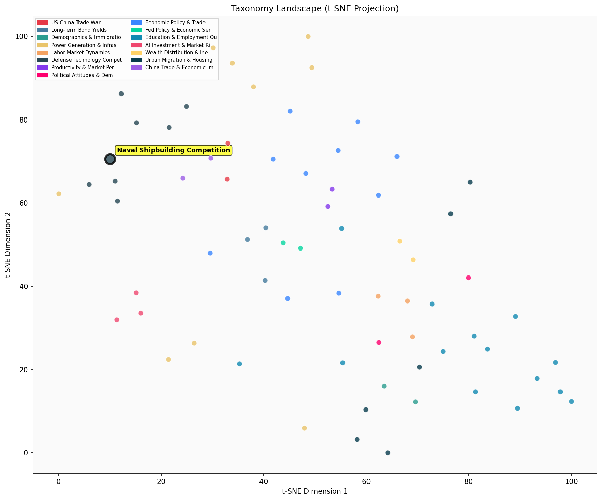

Description
This subcluster examines the intensifying maritime competition between major powers, particularly the US-China rivalry in naval capabilities and shipbuilding capacity. Articles analyze shipbuilding output statistics, naval procurement programs like the Constellation-class frigate, defense spending as percentage of GDP, and strategic partnerships among allies. Coverage includes trade policy measures affecting maritime industries, sanctions on shipbuilders, and infrastructure constraints at major ports. Unlike sibling clusters focused on specific technologies or supply chains, this subcluster emphasizes traditional military hardware production capacity and sea power projection capabilities that underpin broader geopolitical competition.
Similarity to All 70 Subclusters
Each cell represents a subcluster. Color intensity shows similarity (blue=low, red=high). Black line marks current subcluster position.
Relationship to Primary Clusters
Average similarity to each of the 15 primary clusters. Larger area = stronger relationship to that cluster.
Taxonomy Landscape
All 70 subclusters positioned by similarity (t-SNE). Current subcluster highlighted with label. Click to enlarge.
Network Connections
Current subcluster at center, connected to related subclusters. Line thickness = similarity strength.
Most Representative Articles
-
1. Chinese military spending was likely 3.9% of GDP in 2022, compared to the United States’ 2.9%. @MEag
-
2. As measured by tonnage, China built 57% of ships globally in 2024 and has 59% of outstanding orders
-
3. South Korean shipbuilders' stocks have surged on indications the US may outsource components of nava
-
4. China’s “large and adaptive manufacturing base” is an increasingly important military advantage vers
-
5. The Chinese submarine fleet is improving rapidly in quantity and quality, as it has picked up techno
Edge Cases (Boundary Articles)
-
1. Demand for high-voltage cables outside China is increasingly supply-constrained which will soon starThis article is borderline because while it mentions supply constraints for high-voltage cables, it focuses on renewable energy infrastructure rather than naval shipbuilding or maritime military competition between major powers. The content about power cables and energy projects has virtually no connection to the cluster's core theme of naval capabilities and shipbuilding competition, making it a clear misclassification that would be better suited for the energy/power demand cluster.
-
2. A well-regarded Chinese research center claims to have developed a new method of tracking American sThis article is borderline because while it involves naval/submarine technology that relates to maritime power competition between the US and China, it primarily focuses on a research breakthrough in tracking methodology rather than shipbuilding capacity or naval fleet development. The emphasis on a "research center" developing a "new method" makes it more aligned with scientific discovery than the shipbuilding and maritime power competition that defines the assigned cluster.
-
3. Chinese researchers claim to have developed a method for tracking submarines via their magnetic fielThis article is borderline because while it discusses submarine detection technology (relevant to naval warfare), it focuses primarily on a scientific breakthrough in magnetic field detection combined with AI rather than shipbuilding competition or maritime power dynamics between nations. The content is more about technological innovation and research methodology than the geopolitical naval competition that defines the cluster's core theme.
Original Dendrogram